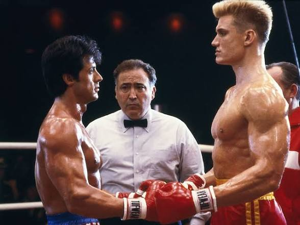

ROCKY IV (1985) — CERTIFIED MGC XF-44

🏛 MGC LOWER COURT OF APPEALS
- ASSET TITLE: Rocky IV (1985) – The East vs. West Heavy-Alloy Re-Strike
- OFFICIAL REGISTRY GRADE: Certified MGC XF-44 (Choice Extremely Fine Workhorse)
- LOWER COURT DOCKET: Judge Tina & MGC Judge Bob
- CASE FILE: #025
📜 THE STAMPED JUDICIAL VERDICT
Let the permanent ledger reflect the unvarnished reality: the mainstream corporate critics slammed this film with Razzie Awards, but the MGC High Court operates on pure public consensus and entertainment velocity.
- Rocky IV completely avoids the G-3 junk box or the PO-1 basal state floor because it is an absolute masterpiece of high-luster, high-velocity 1980s entertainment. The physical striking power of MGM’s production is top-tier—the 35mm cinematography is pristine, the physical fight sound design is thunderous, and Bill Conti’s high-voltage musical tracks inject unmatched adrenaline straight into the layout engine.
- While the second act exhibits clear circulation wear in the form of predictable tropes and back-to-back training montage compression loops, these surface blemishes never stall the linear gravity of the film. The final 15-round Moscow slugfest is clean, continuous, and high-impact. It is a legendary, highly circulated cinematic coin that carries an undeniable proof-like luster on the midnight-movie shelf.
- MGC Judge Bob Slams his wooden gavel down with a thunderous pop. Case Closed. ⚖️

• © 2026 MOVIE GRADING CONSENSUS. All Sovereign Rights Reserved.